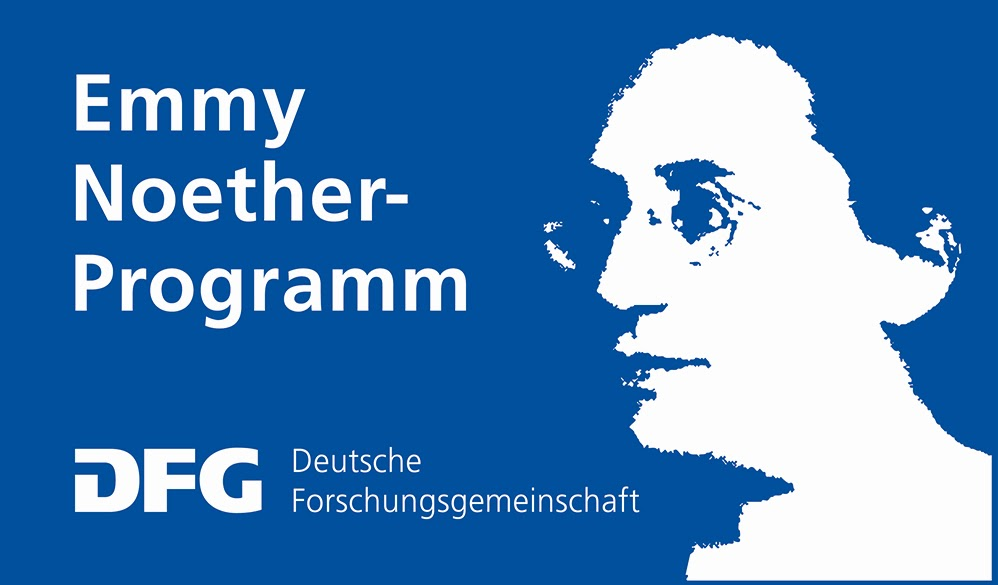

Foundations of Interactive Democracy is a project that was funded by the Deutsche Forschungsgemeinschaft (DFG) within the Emmy Noether Programme.
Project duration: 2018 - 2023
Overview
This project studies axiomatic and computational foundations of Interactive Democracy. Interactive Democracy (ID) (aka digital democracy or e-democracy) is an umbrella term that encompasses a variety of approaches to make democratic processes more engaging and responsive. A common goal of these approaches is to utilize modern information technology—in particular, the Internet—in order to enable more interactive decision making processes.
An integral part of many ID proposals are online decision platforms that provide much more flexibility and interaction possibilities than traditional democratic systems. The successful design of online decision platforms presents a multidisciplinary research challenge; the theory of preference aggregation (aka social choice theory) seems particularly relevant. However, existing ID proposals are mostly disconnected from the vast body of scientific literature on preference aggregation.
The project aims to remedy this by exploring how mathematically grounded voting theory can be employed to aid the design of online decision platforms and other ID tools. Both axiomatic and computational techniques will play a vital role in this rigorous foundational analysis of the voting-theoretic aspects of ID. Insights from computational social choice, an emerging research area at the intersection of computer science and economics, will be particularly relevant for this endeavor.
Team
Publications
PhD Theses
Jannik Peters. Facets of Proportionality: Selecting Committees, Budgets, and Clusters. PhD thesis, 2025. link
Jonas Israel. Algorithms for Social Choice in Dynamic Environments. PhD thesis, 2024. link
Ulrike Schmidt-Kraepelin. Models and Algorithms for Scalable Collective Decision Making. PhD thesis, 2023. link
Book Chapters and Invited Contributions
M. Brill. From Computational Social Choice to Digital Democracy. In Z.-H. Zhou, editor, Proceedings of the 30th International Joint Conference on Artificial Intelligence (IJCAI) Early Career Spotlight Track, pages 4937–4939. IJCAI, 2021. link pdf
M. Brill. Interactive Democracy: New Challenges for Social Choice Theory. In J.-F. Laslier, H. Moulin, R. Sanver, and W. S. Zwicker, editors, Future of Economic Design, pages 59–66. Springer, 2019. link pdf
Journal Papers
J. Israel and M. Brill. Dynamic Proportional Rankings. Social Choice and Welfare. Forthcoming. link pdf
N. Boehmer, M. Brill, and U. Schmidt-Kraepelin. Proportional Representation in Matching Markets: Selecting Multiple Matchings under Dichotomous Preferences. Social Choice and Welfare. Forthcoming. link pdf
Xinhang Lu, Jannik Peters, Haris Aziz, Xiaohui Bei, Warut Suksompong. Approval-based voting with mixed goods. Social Choice and Welfare, 62:643–677, 2024. link
Markus Brill, Rupert Freeman, Svante Janson and Martin Lackner. Phragmén’s voting methods and justified representation. Mathematical Programming, 203(1–2):47–76, 2024. link pdf
M. Brill, P. Gölz, D. Peters, U. Schmidt-Kraepelin, and K. Wilker. Approval-based apportionment. Mathematical Programming, 203(1–2):77–105 2024. link pdf
L. Sánchez-Fernández, N. Fernández García, J. A. Fisteus, and M. Brill. The Maximin Support Method: An Extension of the D’Hondt Method to Approval-Based Multiwinner Elections. Mathematical Programming, 203(1–2):107–134, 2024. link pdf
Edith Elkind, Piotr Faliszewski, Ayumi Igarashi, Pasin Manurangsi, Ulrike Schmidt-Kraepelin, Warut Suksompong. Justifying Groups in Multiwinner Approval Voting. Theoretical Computer Science, 2023. link
M. Brill, U. Schmidt-Kraepelin, and W. Suksompong. Margin of Victory for Tournament Solutions. Artificial Intelligence, Volume 302, 2022. link pdf
S. J. Brams, M. Brill, A.-M. George. The Excess Method: A Multiwinner Approval Voting Procedure to Allocate Wasted Votes. Social Choice and Welfare, 58:283–300, 2022. link pdf (read-only) ]
Telikepalli Kavitha, Tamás Kiraly, Jannik Matuschke, Ildikó Schlotter, Ulrike Schmidt-Kraepelin. Popular Branchings and Their Dual Certificates. Mathematical Programming, 192:567–595, 2022. link
Mithun Chakraborty, Ulrike Schmidt-Kraepelin, Warut Suksompong. Picking Sequences and Monotonicity in Weighted Fair Division. Artificial Intelligence Journal, 301:103578, 2021. link
A. Pommerening, M. Brill, U. Schmidt-Kraepelin, and J. Haufe. Democratising forest management: Applying multiwinner approval voting to tree selection. Forest Ecology and Management, 478:118509, 2020. link pdf
M. Brill, J.-F. Laslier, and P. Skowron. Multiwinner Approval Rules as Apportionment Methods. Journal of Theoretical Politics, 30(3):358–382, 2018. link arXiv
Conference Papers
Ioannis Caragiannis, Evi Micha, Jannik Peters. Can a Few Decide for Many? The Metric Distortion of Sortition. ICML 2024.
M. Revel, N. Boehmer, R. Colley, M. Brill, P. Faliszewski, and E. Elkind. Selecting Representative Bodies: An Axiomatic View. In Proceedings of the 23rd International Conference on Autonomous Agents and Multiagent Systems (AAMAS) Blue Sky Ideas Track, 2024. arxiv
N. Boehmer, M. Brill, A. Cevallos, J. Gehrlein, L. Sánchez-Fernández, and U. Schmidt-Kraepelin. Approval-based committee voting in practice: A case study of (over-)representation in the Polkadot blockchain. Proceedings of the 38th AAAI Conference on Artificial Intelligence (AAAI), pages 9519–9527. AAAI Press, 2024. link arxiv
M. Brill and J. Peters. Completing Priceable Committees: Utilitarian and Representation Guarantees. Proceedings of the 38th AAAI Conference on Artificial Intelligence (AAAI), pages 9528–9536. AAAI Press, 2024. link arxiv
A. Imber and J. Israel and M. Brill and H. Shachnai and B. Kimelfeld. Spatial Voting with Incomplete Voter Information. Proceedings of the 38th AAAI Conference on Artificial Intelligence (AAAI), pages 9790– 9797. AAAI Press, 2024. link arxiv
Rupert Freeman, Ulrike Schmidt-Kraepelin. Project-Fair and Truthful Mechanisms for Budget Aggregation
Conference AAAI Conference on Artificial Intelligence (AAAI), 2024
arXiv Poster Talk
Luisa Montanari, Ulrike Schmidt-Kraepelin, Warut Suksompong, Nicholas Teh. Weighted Envy-Freeness for Submodular Valuations
Conference AAAI Conference on Artificial Intelligence (AAAI), 2024
arXiv Poster
Markus Utke, Ulrike Schmidt-Kraepelin. Anonymous and Copy-Robust Delegations for Liquid Democracy
Conference (Spotlight Presentation) Conference on Neural Information Processing Systems (NeurIPS), 2023
Best paper award at Social Choice and Welfare 2024
arXiv Poster
M. Brill and J. Peters. Robust and Verifiable Proportionality Axioms for Multiwinner Voting. Proceedings of the 24th ACM Conference on Economics and Computation (EC), page 301. ACM, 2023. link arxiv
M. Brill, E. Markakis, G. Papasotiropoulos, and J. Peters. Proportionality Guarantees in Elections with Interdependent Issues. Proceedings of the 32nd International Joint Conference on Artificial Intelligence (IJCAI), pages 2537-2545. IJCAI, 2023. pdf
Michelle Döring and Jannik Peters. Margin of Victory for Weighted Tournament Solutions. AAMAS 2023.
M. Brill, S. Forster, M. Lackner, J. Maly, and J. Peters. Proportionality in Approval-Based Participatory Budgeting. In Y. Chen and J. Neville, editors, Proceedings of the 37th AAAI Conference on Artificial Intelligence (AAAI), pages 5524-5531. AAAI Press, 2023. link pdf arxiv
M. Brill, H. Dindar, J. Israel, J. Lang, J. Peters, and U. Schmidt-Kraepelin. Multiwinner Voting with Possibly Unavailable Candidates. In Y. Chen and J. Neville, editors, Proceedings of the 37th AAAI Conference on Artificial Intelligence (AAAI), pages 5532-5539. AAAI Press, 2023. link pdf full version
Théo Delemazure, Tom Demeulemeester, Manuel Eberl, Jonas Israel, Patrick Lederer. Strategy-Proofness and Proportionality in Party-Approval Multi-Winner Elections
Conference 37th AAAI Conference on Artificial Intelligence (AAAI), 2023
Workshop International Workshop on Computational Social Choice (COMSOC), 2023
pdf archive of formal proofs
Xinhang Lu, Jannik Peters, Haris Aziz, Xiaohui Bei, Warut Suksompong. Approval-Based Voting with Mixed Goods. AAAI 2023. pdf
Robert Bredereck, Anne-Marie George, Jonas Israel, Leon Kellerhals. Single-Peaked Opinion Updates. In Proceedings of the 31st International Joint Conferences on Artificial Intelligence (IJCAI), 2022. pdf
Edith Elkind, Piotr Faliszewski, Ayumi Igarashi, Pasin Manurangsi, Ulrike Schmidt-Kraepelin, Warut Suksompong. Justifying Groups in Multiwinner Approval Voting
Conference International Symposium on Algorithmic Game Theory (SAGT), 2022
arXiv
N. Boehmer, M. Brill, and U. Schmidt-Kraepelin. Proportional Representation in Matching Markets: Selecting Multiple Matchings under Dichotomous Preferences. In P. Faliszewski and V. Mascardi, editors, Proceedings of the 21st International Conference on Autonomous Agents and Multiagent Systems (AAMAS). IFAAMAS, 2022. pdf arxiv
M. Brill, T. Delemazure, A.-M. George, M. Lackner, and U. Schmidt-Kraepelin. Liquid Democracy with Ranked Delegations. In V. Honavar and M. Spaan, editors, Proceedings of the 36th AAAI Conference on Artificial Intelligence (AAAI). AAAI Press, 2022. pdf arxiv
M. Brill, J. Israel, E. Micha, and J. Peters. Individual Representation in Approval-Based Committee Voting. In V. Honavar and M. Spaan, editors, Proceedings of the 36th AAAI Conference on Artificial Intelligence (AAAI). AAAI Press, 2022. pdf arxiv
A. Imber, J. Israel, M. Brill, and B. Kimelfeld. Approval-Based Committee Voting under Incomplete Information. In V. Honavar and M. Spaan, editors, Proceedings of the 36th AAAI Conference on Artificial Intelligence (AAAI). AAAI Press, 2022. pdf arxiv
Edith Elkind, Piotr Faliszewski, Ayumi Igarashi, Pasin Manurangsi, Ulrike Schmidt-Kraepelin, Warut Suksompong. The Price of Justified Representation
Conference AAAI Conference on Artificial Intelligence (AAAI), 2022
arXiv
Lee Cohen, Ulrike Schmidt-Kraepelin, Yishay Mansour. Dueling Bandits with Team Comparisons.
Conference Conference on Neural Information Processing Systems (NeurIPS), 2021
arXiv Poster
Mithun Chakraborty, Ulrike Schmidt-Kraepelin, Warut Suksompong. Picking Sequences and Monotonicity in Weighted Fair Division.
Conference International Joint Conference on Artificial Intelligence (IJCAI), 2021
Workshop Games, Agents, and Incentives Workshop (GAIW), 2021
arXiv Poster
J. Israel and M. Brill. Dynamic Proportional Rankings. In Z.-H. Zhou, editor, Proceedings of the 30th International Joint Conference on Artificial Intelligence (IJCAI), pages 261–267. IJCAI, 2021. link pdf arxiv
L. Sánchez-Fernández, N. Fernández García, J. A. Fisteus, and M. Brill. The Maximin Support Method: An Extension of the D’Hondt Method to Approval-Based Multiwinner Elections. In K. Leyton-Brown and Mausam, editors, Proceedings of the 35th AAAI Conference on Artificial Intelligence (AAAI), pages 5690–5697. AAAI Press, 2021. link pdf
M. Brill, U. Schmidt-Kraepelin, and W. Suksompong. Margin of victory in tournaments: Structural and experimental results. In K. Leyton-Brown and Mausam, editors, Proceedings of the 35th AAAI Conference on Artificial Intelligence (AAAI), pages 5228–5235. AAAI Press, 2021. link pdf
M. Brill, P. Gölz, D. Peters, U. Schmidt-Kraepelin, and K. Wilker. Approval-based apportionment. In V. Conitzer and F. Sha, editors, Proceedings of the 34th AAAI Conference on Artificial Intelligence (AAAI), pages 1854–1861. AAAI Press, 2020. link pdf
M. Brill, U. Schmidt-Kraepelin, and W. Suksompong. Refining tournament solutions via margin of victory. In V. Conitzer and F. Sha, editors, Proceedings of the 34th AAAI Conference on Artificial Intelligence (AAAI), pages 1862–1869. AAAI Press, 2020. link pdf
Telikepalli Kavitha, Tamás Kiraly, Jannik Matuschke, Ildikó Schlotter, Ulrike Schmidt-Kraepelin. Popular Branchings and Their Dual Certificates.
Conference Integer Programming and Combinatorial Optimization (IPCO), 2020
arXiv Poster Talk
M. Brill, P. Faliszewski, F. Sommer, and N. Talmon. Approximation Algorithms for BalancedCC Multiwinner Rules. In N. Agmon and M. E. Taylor, editors, Proceedings of the 18th International Joint Conference on Autonomous Agents and Multi Agent Systems (AAMAS), pages 494–502. IFAAMAS, 2019. Shortlisted for the AAMAS 2019 Best Paper Award. link pdf
M. Brill. Interactive Democracy. In M. Dastani and G. Sukthankar, editors, Proceedings of the 17th International Conference on Autonomous Agents and Multiagent Systems (AAMAS) Blue Sky Ideas Track, pages 1183–1187. IFAAMAS, 2018. link pdf